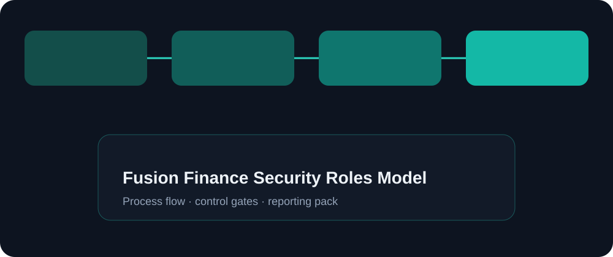

Objective
Design a finance access model with clear separation of duties and usable day-to-day roles.
A practical role design for finance users — job roles, duty separation, period close privileges, and access review rhythm that supports control without blocking work.
Knowledge / portfolio case study only. Not employment history, not a named client engagement, and not a certification claim.
Design a finance access model with clear separation of duties and usable day-to-day roles.
Over-broad access creates audit risk; over-tight access creates workarounds.
Role catalog for AP/AR/GL/close, SoD checkpoints, access request path, and quarterly review. Not a full IAM implementation.
List personas → map duties → identify SoD conflicts → propose role bundles → define request/approval → test with sample users.

AP clerk posts invoice but cannot approve → approver cannot create supplier bank change → closer opens/closes periods → review access extract.
No combined create+approve for high-risk duties; privileged access time-bound; quarterly access attestation.
Shows control-aware Fusion finance security thinking.